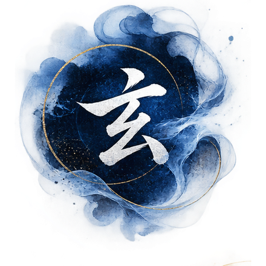
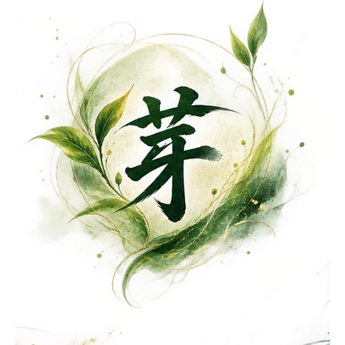
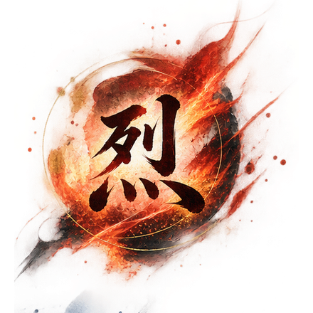
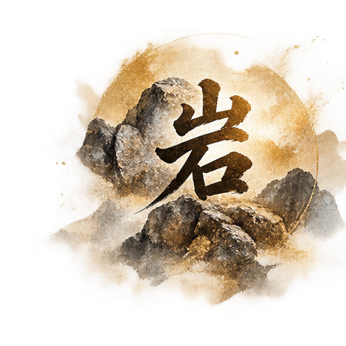
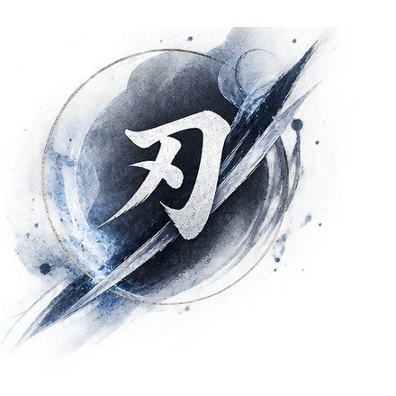

오약(五若)
기업의 상태를 읽는 다섯 언어.
좋은 상태도 나쁜 상태도 없습니다.
다만 지금의 과제와 맞지 않는 상태가 있을 뿐입니다.
오행에서 온, 조직의 언어
음양오행(陰陽五行)이 이 틀의 뿌리입니다.
木이 火를 낳고, 火가 土를, 土가 金을, 金이 水를,
水가 다시 木을 키우듯 — 통은 기업의 상태를 다섯 국면, 오약(五若)으로 읽습니다.
오행이 계절의 언어라면, 오약은 조직의 언어입니다.





한 기업 안에서도 영업은 타오르고(若烈) 재무는 비어 있을(若玄) 수 있습니다.
경영전환은 이 복합적인 국면을 정확히 읽는 데서 시작됩니다.
다섯 若
검고 깊고 비어 있는 근원의 상태.
형태가 드러나지 않고 방향이 흩어져 있어 붕괴 직전처럼 보이지만,
비어 있기에 어떤 형태로든 새로 만들어질 수 있습니다.
한 고조 유방의 빈 그릇이 소하·장량·한신을 담았듯이.
막 싹이 튼 상태.
살아 있고 가능성이 있지만 나무가 되려면 멀었습니다.
지면 위 싹만 보고 땅속 뿌리를 확인하지 않은 채 확장하면 싹을 잡아당기는 꼴이 됩니다.
제갈량의 융중대가 유비의 若芽를 정확히 읽었듯이.
맹렬히 타오르는 상태.
성장 추진력과 속도가 강하고 외부에서도 성공처럼 보입니다.
그러나 불은 빛을 내면서 동시에 자신을 태웁니다.
진시황의 제국이 보여주듯, 타오름은 성장과 소모를 동시에 일으킵니다.
단단해져 움직이기 어려운 상태.
규칙과 매뉴얼이 있고 사람이 바뀌어도 조직이 돌아갑니다.
그러나 규칙이 목적이 되고 매뉴얼이 판단을 대신하며 새로운 시장의 언어를 놓칩니다.
벼려져 날카로운 상태.
불필요한 것이 제거되고 본질만 남았습니다.
집중과 결정의 힘이 강하지만, 칼날은 휘지 못하면 부러집니다.
오약에서 사십계까지
오약(五若)으로 상태를 읽었다면, 사축으로 막힘의 위치를 짚고, 팔략으로 방향을 정하고,
십육책으로 구조를 세우며, 사십계로 현장의 행동을 압축합니다.
추상에서 실행으로 내려오는 통의 언어 체계입니다.
기업이 지금 어느 국면에 있는지 다섯 언어로 읽습니다.
人·營·財·産 — 문제가 어느 축에 있는지 좌표를 잡습니다.
짚은 위치에서 나아갈 여덟 갈래의 방향을 세웁니다.
방향을 실제 조직·실행의 구조로 짭니다.
추상을 현장에서 바로 쓸 수 있는 행동으로 압축합니다.